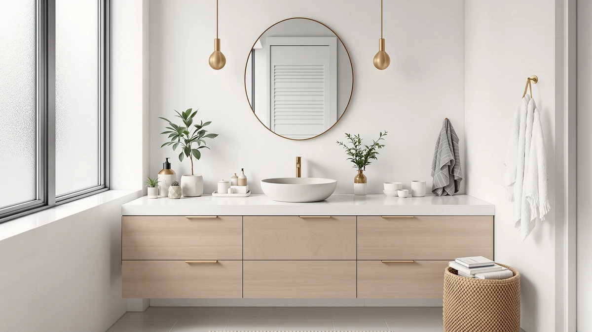

Vessel Sink vs. Undermount Sink Vanity: Which Should You Choose? (2026)
Prices and picks verified as of August 2026. Independent, reader-supported reviews.


Things to Know Before You Buy
- Vessel sinks sit 4 to 6 inches taller than undermount sinks, so they usually need a taller vessel-height faucet, which adds $30 to $150 to your final cost.
- Undermount sinks seal to the underside of the counter with silicone, and that seam needs a reseal check every year or two to keep water out of the cabinet below.
- A vessel sink vanity shows water spots and toothpaste residue on the exposed rim faster than an undermount sink, where debris wipes straight into the basin.
- Glass and ceramic vessel bowls chip more easily at the rim than a solid-surface or stone undermount sink, so households with kids often do better with undermount.
- Vessel sinks show up most in farmhouse and modern vanity designs, while undermount sinks pair with almost any style since the bowl disappears under the counter.
The vessel sink vs undermount sink vanity decision shapes how your bathroom looks and how much time you spend wiping around the bowl every week. Vessel sinks sit above the counter as a visible design piece, while undermount sinks tuck below the counter edge for a flush, low-maintenance surface. Both show up constantly in 2026 vanity listings, and the right pick depends less on trend than on who actually uses the sink and how often.
Vessel sinks tend to win the photos. A glass or ceramic bowl perched on a farmhouse cabinet reads as a statement piece in a powder room or guest bath. Undermount sinks win the daily grind: no rim to catch toothpaste splatter, no lip to bump a toothbrush off, and a counter you can wipe straight into the basin. This guide compares build quality, price, and everyday use so you can match the sink style to the bathroom that actually has to live with it.
Quick Answer
For a primary bathroom that gets used every day, choose an undermount sink vanity. It cleans faster, hides its seam under the counter, and holds up better against kids and daily traffic. Choose a vessel sink for a powder room or guest bath where style matters more than daily wear, since the exposed bowl makes a bigger design statement.
What is Vessel Sink?
A vessel sink is a wash bowl that sits entirely on top of the vanity counter instead of dropping into a cutout. The counter usually has a single drain hole and, on some designs, a faucet hole, while the bowl itself, typically glass, ceramic, stone, or metal, mounts with a ring of silicone rather than sealing into a cutout. Because the bowl rises above the counter, the surface stays mostly flat and visible, which is why a vessel sink reads as a design centerpiece rather than a fixture that disappears into the layout.
A vessel sink vanity needs a taller faucet, usually called a vessel-height faucet, so the spout clears the rim of the bowl. Standard-height faucets won't work here, and buying the wrong faucet is the most common mistake first-time vessel sink buyers make.
Manufacturers offer vessel sinks in nearly every material and shape, round, oval, rectangular, and hammered metal designs among them, which is part of the appeal. That variety comes with a tradeoff: the exposed bowl and the counter around it collect water and toothpaste more visibly than a sink that sits flush with the counter, so the payoff for the look is a bit more wiping.
What is Undermount Sink Vanity?
An undermount sink vanity mounts the basin below the counter, with the rim attached to the underside of a cutout so the counter surface runs edge to edge over the top of the bowl. Installers secure the sink with clips or epoxy and run a bead of silicone along the seam to keep water from getting between the counter and the basin. Because there's no rim on top of the counter, you can wipe crumbs, toothpaste, or spilled makeup directly into the sink instead of around a raised lip.
Undermount sinks work with standard-height faucets, which keeps parts simpler and usually cheaper than a vessel sink setup. They also pair with any solid counter material, quartz, granite, or engineered stone, since the seal depends on the counter having enough thickness to support the cutout.
The tradeoff shows up over time. The silicone seal under an undermount sink can degrade, and a failed seal lets water seep into the cabinet before you notice a leak. Checking that seam once a year keeps an undermount sink vanity from turning into a hidden water damage problem.
Head-to-Head: Build Quality & Durability
Vessel sinks put more structural weight on the mounting ring and the counter's drain hole, since the bowl isn't supported by a cutout. Glass and ceramic vessel sinks are also more exposed at the rim, so a dropped shampoo bottle or a bumped hairdryer is more likely to chip the edge than it would on an undermount sink, where the rim sits protected under the counter.
Undermount sink vanities depend on the strength of the silicone seal and the counter material around the cutout. A quartz or solid-surface counter holds that seal for years; a laminate counter is a poor match, since the exposed particleboard edge at the cutout can swell if water gets in. Vessel sinks, by contrast, work fine on laminate because there's no cutout to protect.
Both styles last as long as their materials suggest: stone and solid-surface vessel bowls resist chipping better than glass, and stone or solid-surface undermount sinks resist seal failure better than a cheap acrylic. If durability drives your vessel sink vs undermount sink vanity choice, match the sink material to how careful your household is around the counter.
Head-to-Head: Price & Value
A vessel sink vanity often looks like the cheaper option on a listing page, but the vessel-height faucet adds $30 to $150 depending on finish, and that cost rarely shows up in the advertised vanity price. Budget for the faucet separately when you compare a vessel sink vanity against an undermount sink vanity that already lists a standard faucet.
Undermount sink vanities cost more upfront in cabinet and counter pairing, since the counter has to be thick and rigid enough to support a cutout, but the standard faucet keeps hardware costs predictable. Over a five-to-ten-year span, undermount sinks also avoid the resealing labor that a loose vessel mounting ring sometimes needs. If you're shopping on a strict budget, check our buying guide for what a full setup, sink, faucet, and counter, actually costs before you commit to either style.
Head-to-Head: Use Experience
Daily use is where the two styles diverge the most. An undermount sink vanity lets you wipe the counter straight into the basin instead of working around a raised edge. For a family bathroom with kids brushing their teeth twice a day, that difference adds up to a noticeably faster cleanup.
A vessel sink vanity asks more of you day to day. The exposed rim and the counter around the bowl catch water rings, toothpaste flecks, and soap residue that you have to wipe separately from the sink itself. The taller bowl height matters too, since a vessel sink can sit several inches above where a standard sink lands, making it harder for kids or shorter adults to reach.
Vessel sinks do have one edge: because the bowl sits above the counter, a chip or crack is easier to spot and, on some models, easier to replace. An undermount sink failure usually stays hidden until you notice water damage in the cabinet, which makes a routine seal check worth the ten minutes it takes.
When to Choose Vessel Sink
Choose a vessel sink vanity for a powder room, guest bath, or any space where the sink doubles as a design feature and doesn't see heavy daily traffic. A glass or stone vessel bowl on a farmhouse-style vanity makes a strong first impression for guests, and since it's not used constantly, the extra wiping is a minor tradeoff.
It also makes sense on a laminate or budget counter that wouldn't support an undermount cutout, since a vessel sink sits on top and skips the sealed-cutout requirement. Confirm the faucet you're buying is rated for vessel height before you order, and check clearance above the vanity, since a vessel sink adds several inches and can crowd a low mirror or light fixture.
When to Choose Undermount Sink Vanity
Choose an undermount sink vanity for a primary or family bathroom that multiple people use every day. The flush counter wipes clean fast, there's no rim for kids to catch a toothbrush on, and the standard-height faucet keeps replacement parts simple if something breaks years from now.
It's also the better call if you want a specific solid-surface or stone counter and don't want a raised bowl interrupting the surface. Pair it with our vanities with sinks roundup if you want ready-made combos instead of matching a separate sink and counter yourself. The one habit worth building: check the silicone seam under the sink once a year, since that seal is the only thing keeping water out of the cabinet below.
Our Top Picks
These three vanities are all vessel sink models, since that's the style most shoppers on this page are still deciding whether to buy. Each pairs a vessel-ready counter with a different budget and finish, from an entry-level ceramic bowl to a floating cabinet with a glass basin.

Editor's Pick
YOURLITE 36" Rustic Farmhouse Bathroom
A 36-inch rustic farmhouse vanity with a durable white ceramic vessel sink, the most forgiving vessel material for everyday chips and scratches.
$219.99
Check Price on Amazon
Best Value
SOLIDEE 36 Inch Black Floating
A wall-mounted floating vanity with a blue glass vessel bowl, a color pop for a powder room without the footprint of a freestanding cabinet.
$269.90
Check Price on Amazon
Premium Choice
Concho 30'' Farmhouse Bathroom Vanity
A 30-inch farmhouse vanity with a sliding barn door, built-in LED lighting, and a shatter-resistant tempered glass vessel sink.
$199.99
Check Price on AmazonWhich is easier to clean, a vessel sink or an undermount sink vanity?
An undermount sink vanity cleans faster, since the counter runs flush into the basin and debris wipes straight in.
Do vessel sinks need a special faucet?
Yes.
Frequently Asked Questions
Which is easier to clean, a vessel sink or an undermount sink vanity?
An undermount sink vanity cleans faster, since the counter runs flush into the basin and debris wipes straight in. A vessel sink has an exposed rim that collects water spots and toothpaste residue, so it needs a separate wipe-down.
Do vessel sinks need a special faucet?
Yes. A vessel sink vanity needs a taller vessel-height faucet so the spout clears the rim of the bowl. A standard undermount faucet sits too low to reach the bowl properly.
Which sink style is better for a family bathroom?
An undermount sink vanity holds up better in a family bathroom. There's no raised rim for kids to bump a toothbrush against, and cleanup is noticeably faster.
Can you install a vessel sink on a laminate counter?
Yes, and it's one of the better matches. A vessel sink sits on top of the counter instead of dropping into a cutout, avoiding the exposed particleboard edge an undermount install needs sealed against on laminate.
How often do you need to reseal an undermount sink?
Check the silicone seam under an undermount sink about once a year. Gaps, discoloration, or soft spots in the cabinet below mean it's time to reseal, since a failed seal is how undermount sinks develop hidden water damage.
Final Verdict
The vessel sink vs undermount sink vanity choice comes down to who uses the bathroom and how often. Pick an undermount sink vanity for a busy family bathroom where fast cleanup matters more than the visual statement, and pick a vessel sink for a powder room or guest bath where design carries more weight than daily wear. If you're leaning vessel, the YOURLITE 36-inch farmhouse vanity above is a solid starting point: a durable ceramic bowl at a price that leaves room in the budget for the vessel-height faucet you'll need to pair with it.